CODING AGENTS AS PIXEL WORLD MODELS
traex/DeepSeek-V4.1-Flash · instance_preservation_0005
点击播放 · 原生 RGB 像素
逐轮保存的候选
回放视频、检查图与代码变化。
每份候选均可单独播放。实际图片检查记录在下方工具轨迹中。
候选 01播放与检查图
点击播放 · 原生 RGB 像素
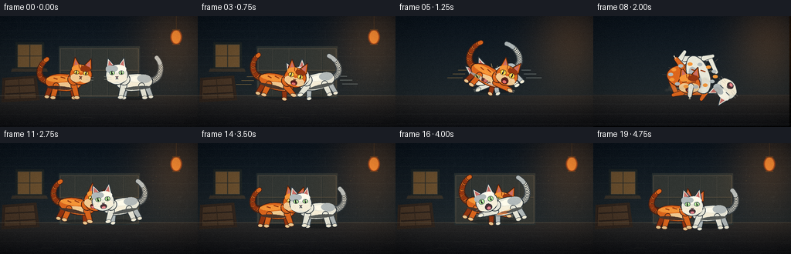
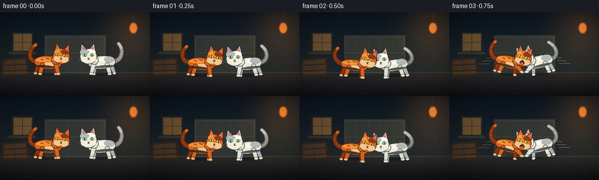
展开代码变化
--- 上一保存版本
+++ 本次保存版本
@@ -0,0 +1,740 @@
+"""Generate a 5-second, 20-frame cat fight animation.
+
+The scene is drawn procedurally with Pillow and NumPy. A supersampled 2D
+canvas keeps the small output crisp while the cat rig provides expressive,
+frame-by-frame poses.
+"""
+
+from __future__ import annotations
+
+import math
+from pathlib import Path
+
+import numpy as np
+from PIL import Image, ImageDraw, ImageFilter
+
+import artifact_io
+
+
+W, H, N, FPS = 256, 144, 20, 4.0
+SS = 4
+ROOT = Path(__file__).resolve().parent
+
+
+def sc(value: float) -> int:
+ return int(round(value * SS))
+
+
+def spt(point: tuple[float, float]) -> tuple[int, int]:
+ return sc(point[0]), sc(point[1])
+
+
+def mix(a: float, b: float, t: float) -> float:
+ return a + (b - a) * t
+
+
+def smoothstep(t: float) -> float:
+ t = max(0.0, min(1.0, t))
+ return t * t * (3.0 - 2.0 * t)
+
+
+def rgba(color: tuple[int, int, int], alpha: int = 255) -> tuple[int, int, int, int]:
+ return color[0], color[1], color[2], alpha
+
+
+def ellipse_points(
+ center: tuple[float, float],
+ radii: tuple[float, float],
+ angle: float = 0.0,
+ count: int = 48,
+) -> list[tuple[float, float]]:
+ ca, sa = math.cos(math.radians(angle)), math.sin(math.radians(angle))
+ points = []
+ for i in range(count):
+ a = math.tau * i / count
+ x, y = math.cos(a) * radii[0], math.sin(a) * radii[1]
+ points.append((center[0] + x * ca - y * sa, center[1] + x * sa + y * ca))
+ return points
+
+
+def polygon(
+ draw: ImageDraw.ImageDraw,
+ points: list[tuple[float, float]],
+ fill: tuple[int, int, int, int],
+ outline: tuple[int, int, int, int] | None = None,
+ width: float = 1.0,
+) -> None:
+ scaled = [spt(point) for point in points]
+ draw.polygon(scaled, fill=fill)
+ if outline is not None:
+ draw.line(scaled + [scaled[0]], fill=outline, width=max(1, sc(width)), joint="curve")
+
+
+def ellipse(
+ draw: ImageDraw.ImageDraw,
+ center: tuple[float, float],
+ radii: tuple[float, float],
+ fill: tuple[int, int, int, int],
+ outline: tuple[int, int, int, int] | None = None,
+ width: float = 1.0,
+ angle: float = 0.0,
+) -> None:
+ polygon(draw, ellipse_points(center, radii, angle), fill, outline, width)
+
+
+def capsule(
+ draw: ImageDraw.ImageDraw,
+ start: tuple[float, float],
+ end: tuple[float, float],
+ radius_start: float,
+ radius_end: float,
+ fill: tuple[int, int, int, int],
+ outline: tuple[int, int, int, int] | None = None,
+ outline_width: float = 0.8,
+) -> None:
+ if outline is not None:
+ capsule(
+ draw,
+ start,
+ end,
+ radius_start + outline_width,
+ radius_end + outline_width,
+ outline,
+ None,
+ )
+ dx, dy = end[0] - start[0], end[1] - start[1]
+ length = max(1e-6, math.hypot(dx, dy))
+ px, py = -dy / length, dx / length
+ points = [
+ (start[0] + px * radius_start, start[1] + py * radius_start),
+ (end[0] + px * radius_end, end[1] + py * radius_end),
+ (end[0] - px * radius_end, end[1] - py * radius_end),
+ (start[0] - px * radius_start, start[1] - py * radius_start),
+ ]
+ polygon(draw, points, fill)
+ ellipse(draw, start, (radius_start, radius_start), fill)
+ ellipse(draw, end, (radius_end, radius_end), fill)
+
+
+def bezier(
+ p0: tuple[float, float],
+ p1: tuple[float, float],
+ p2: tuple[float, float],
+ p3: tuple[float, float],
+ count: int = 22,
+) -> list[tuple[float, float]]:
+ points = []
+ for i in range(count):
+ t = i / (count - 1)
+ u = 1.0 - t
+ x = u**3 * p0[0] + 3 * u * u * t * p1[0] + 3 * u * t * t * p2[0] + t**3 * p3[0]
+ y = u**3 * p0[1] + 3 * u * u * t * p1[1] + 3 * u * t * t * p2[1] + t**3 * p3[1]
+ points.append((x, y))
+ return points
+
+
+def tapered_path(
+ draw: ImageDraw.ImageDraw,
+ points: list[tuple[float, float]],
+ radius_start: float,
+ radius_end: float,
+ fill: tuple[int, int, int, int],
+ outline: tuple[int, int, int, int] | None = None,
+ outline_width: float = 0.7,
+) -> None:
+ for i in range(len(points) - 1):
+ t0, t1 = i / (len(points) - 1), (i + 1) / (len(points) - 1)
+ r0 = mix(radius_start, radius_end, t0)
+ r1 = mix(radius_start, radius_end, t1)
+ capsule(draw, points[i], points[i + 1], r0, r1, fill, outline, outline_width)
+
+
+def gradient_background() -> Image.Image:
+ y = np.linspace(0.0, 1.0, H, dtype=np.float32)[:, None]
+ top = np.array([12, 22, 32], dtype=np.float32)
+ bottom = np.array([39, 47, 49], dtype=np.float32)
+ rows = top * (1.0 - y[..., None]) + bottom * y[..., None]
+ arr = np.repeat(rows, W, axis=1)
+
+ floor = np.linspace(0.0, 1.0, H - 103, dtype=np.float32)[:, None, None]
+ floor_top = np.array([44, 43, 42], dtype=np.float32)
+ floor_bottom = np.array([16, 18, 22], dtype=np.float32)
+ floor_arr = floor_top * (1.0 - floor) + floor_bottom * floor
+ arr[103:, :, :] = np.repeat(floor_arr, W, axis=1)
+ return Image.fromarray(np.clip(arr, 0, 255).astype(np.uint8), "RGB").resize(
+ (W * SS, H * SS), Image.Resampling.BILINEAR
+ )
+
+
+def draw_background(frame: int) -> Image.Image:
+ base = gradient_background()
+ draw = ImageDraw.Draw(base, "RGBA")
+ rng = np.random.default_rng(1837)
+
+ # Faint brickwork and plaster cracks in the alley wall.
+ for row, y in enumerate(range(8, 104, 11)):
+ offset = 11 if row % 2 else 0
+ draw.line([spt((0, y)), spt((W, y))], fill=(74, 83, 84, 28), width=sc(0.55))
+ for x in range(-22 + offset, W + 22, 44):
+ draw.line([spt((x, y)), spt((x, y + 11))], fill=(70, 80, 82, 22), width=sc(0.5))
+ for _ in range(18):
+ x = float(rng.uniform(8, 247))
+ y = float(rng.uniform(12, 96))
+ draw.ellipse(
+ [sc(x), sc(y), sc(x + rng.uniform(1.5, 4.0)), sc(y + rng.uniform(1.0, 2.5))],
+ fill=(118, 126, 121, int(rng.uniform(8, 18))),
+ )
+
+ # Weathered wooden service door frames the fight without competing with it.
+ polygon(draw, [(76, 39), (181, 39), (181, 106), (76, 106)], (40, 48, 49, 255))
+ polygon(
+ draw,
+ [(78, 42), (179, 42), (179, 104), (78, 104)],
+ (50, 54, 51, 255),
+ (84, 77, 65, 210),
+ 0.9,
+ )
+ for x in (97, 118, 139, 160):
+ draw.line([spt((x, 42)), spt((x, 104))], fill=(76, 75, 66, 150), width=sc(0.8))
+ draw.line([spt((x + 1, 44)), spt((x + 1, 103))], fill=(27, 36, 38, 110), width=sc(0.55))
+ draw.line([spt((78, 70)), spt((179, 70))], fill=(87, 77, 62, 150), width=sc(1.0))
+ draw.line([spt((79, 72)), spt((178, 72))], fill=(25, 31, 32, 120), width=sc(0.7))
+
+ # A small warm window on the left and a hanging lantern on the right.
+ polygon(draw, [(20, 34), (57, 34), (57, 69), (20, 69)], (30, 37, 37, 255))
+ polygon(
+ draw,
+ [(23, 37), (54, 37), (54, 66), (23, 66)],
+ (110, 82, 48, 255),
+ (86, 74, 57, 255),
+ 0.8,
+ )
+ draw.line([spt((38.5, 37)), spt((38.5, 66))], fill=(48, 49, 43, 220), width=sc(1.3))
+ draw.line([spt((23, 51.5)), spt((54, 51.5))], fill=(48, 49, 43, 220), width=sc(1.1))
+ polygon(draw, [(16, 68), (60, 68), (62, 72), (14, 72)], (58, 51, 42, 255))
+
+ draw.line([spt((228, 0)), spt((228, 17))], fill=(39, 36, 32, 255), width=sc(0.9))
+ ellipse(draw, (228, 27), (7.5, 10.0), (151, 64, 26, 255), (66, 37, 28, 255), 1.0)
+ ellipse(draw, (228, 27), (5.8, 8.3), (224, 126, 47, 255))
+ draw.line([spt((223, 17.5)), spt((233, 17.5))], fill=(74, 51, 31, 255), width=sc(1.1))
+ draw.line([spt((223, 36.5)), spt((233, 36.5))], fill=(74, 51, 31, 255), width=sc(1.1))
+
+ # A low crate anchors the left foreground.
+ polygon(draw, [(3, 80), (47, 77), (51, 109), (2, 112)], (50, 39, 31, 255))
+ polygon(
+ draw,
+ [(6, 83), (44, 80), (47, 106), (5, 108)],
+ (74, 55, 39, 255),
+ (42, 32, 27, 255),
+ 0.8,
+ )
+ draw.line([spt((7, 91)), spt((46, 89))], fill=(44, 35, 29, 255), width=sc(2.1))
+ draw.line([spt((7, 101)), spt((47, 99))], fill=(44, 35, 29, 255), width=sc(2.1))
+ draw.line([spt((24, 81)), spt((26, 107))], fill=(52, 40, 31, 210), width=sc(1.2))
+
+ # Cobbles and scuffs.
+ draw.line([spt((0, 103)), spt((W, 103))], fill=(102, 95, 78, 110), width=sc(1.0))
+ for y in (114, 127, 140):
+ draw.line([spt((0, y)), spt((W, y + 1))], fill=(73, 76, 75, 40), width=sc(0.7))
+ for _ in range(36):
+ x = float(rng.uniform(0, W))
+ y = float(rng.uniform(106, H - 2))
+ rx = float(rng.uniform(3, 11))
+ draw.arc(
+ [sc(x - rx), sc(y - 2), sc(x + rx), sc(y + 3)],
+ 195,
+ 342,
+ fill=(92, 89, 81, int(rng.uniform(16, 36))),
+ width=sc(0.6),
+ )
+
+ # Sparse dust in the lantern beam.
+ for _ in range(28):
+ x = float(rng.uniform(175, 252))
+ y = float(rng.uniform(15, 94))
+ a = int(rng.uniform(12, 40))
+ draw.ellipse([sc(x), sc(y), sc(x + 0.7), sc(y + 0.7)], fill=(246, 188, 95, a))
+
+ # Camera jolt during the impact.
+ if 5 <= frame <= 10:
+ jitter = [0, 1, -1, 2, -2, 1][frame - 5]
+ base = Image.new("RGB", base.size, (7, 11, 15))
+ base.paste(
+ gradient_background().crop(
+ (sc(jitter), sc(abs(jitter) // 2), base.width + sc(jitter), base.height + sc(abs(jitter) // 2))
+ ),
+ (0, 0),
+ )
+ # Reapply the same drawing over the shifted plate.
+ draw = ImageDraw.Draw(base, "RGBA")
+ for y in (103, 114, 127, 140):
+ draw.line([spt((0, y)), spt((W, y))], fill=(73, 76, 75, 50), width=sc(0.8))
+ return base
+
+
+ORANGE = {
+ "fur": (222, 103, 29, 255),
+ "light": (247, 151, 56, 255),
+ "dark": (148, 54, 17, 255),
+ "cream": (244, 203, 145, 255),
+ "outline": (68, 31, 20, 255),
+ "eye": (255, 211, 73, 255),
+ "iris": (102, 178, 56, 255),
+ "nose": (189, 74, 71, 255),
+ "mouth": (89, 31, 31, 255),
+ "tongue": (225, 111, 108, 255),
+}
+
+WHITE = {
+ "fur": (232, 232, 218, 255),
+ "light": (255, 252, 236, 255),
+ "dark": (177, 186, 187, 255),
+ "cream": (248, 240, 218, 255),
+ "outline": (43, 54, 61, 255),
+ "eye": (171, 228, 147, 255),
+ "iris": (65, 131, 108, 255),
+ "nose": (209, 119, 124, 255),
+ "mouth": (76, 48, 53, 255),
+ "tongue": (229, 130, 137, 255),
+}
+
+
+def draw_head(
+ palette: dict[str, tuple[int, int, int, int]],
+ state: dict[str, float],
+) -> Image.Image:
+ layer = Image.new("RGBA", (sc(68), sc(64)), (0, 0, 0, 0))
+ draw = ImageDraw.Draw(layer, "RGBA")
+ cx, cy = 34.0, 32.0
+ outline = palette["outline"]
+
+ # Ears.
+ polygon(draw, [(cx - 12, cy - 8), (cx - 10, cy - 22), (cx - 2, cy - 11)], palette["fur"], outline, 1.0)
+ polygon(draw, [(cx + 2, cy - 11), (cx + 11, cy - 22), (cx + 13, cy - 8)], palette["fur"], outline, 1.0)
+ polygon(draw, [(cx - 9.5, cy - 11), (cx - 9, cy - 18.5), (cx - 4.2, cy - 11.5)], (203, 111, 103, 255))
+ polygon(draw, [(cx + 4.2, cy - 11.5), (cx + 9.7, cy - 18.5), (cx + 10.7, cy - 10.5)], (203, 111, 103, 255))
+
+ ellipse(draw, (cx, cy), (14.2, 13.0), palette["fur"], outline, 1.0)
+ ellipse(draw, (cx - 3, cy - 7.5), (9.5, 5.2), palette["light"], angle=-5)
+ ellipse(draw, (cx + 5, cy - 7.8), (6.8, 4.0), palette["dark"])
+ ellipse(draw, (cx - 5.5, cy + 4.7), (7.5, 5.5), palette["cream"])
+ ellipse(draw, (cx + 5.5, cy + 4.7), (7.5, 5.5), palette["cream"])
+
+ # Forehead stripes.
+ if palette is ORANGE:
+ draw.line([spt((cx, cy - 12)), spt((cx, cy - 7))], fill=palette["dark"], width=sc(1.15))
+ draw.line([spt((cx - 4, cy - 12)), spt((cx - 3, cy - 8))], fill=palette["dark"], width=sc(0.9))
+ draw.line([spt((cx + 4, cy - 12)), spt((cx + 3, cy - 8))], fill=palette["dark"], width=sc(0.9))
+ else:
+ ellipse(draw, (cx + 8, cy - 7), (6.2, 5.0), palette["dark"], angle=-22)
+
+ wide = state.get("wide", 0.0)
+ squint = state.get("squint", 0.0)
+ eye_y = cy - 2.4
+ for side in (-1, 1):
+ ex = cx + side * 6.0
+ if squint > 0.55:
+ draw.line(
+ [spt((ex - 2.8, eye_y + 0.5)), spt((ex + 2.8, eye_y - 0.6))],
+ fill=outline,
+ width=sc(1.0),
+ )
+ else:
+ eye_rx = 3.0 + 0.7 * wide
+ eye_ry = 2.4 + 1.1 * wide
+ ellipse(draw, (ex, eye_y), (eye_rx, eye_ry), palette["eye"], outline, 0.55)
+ ellipse(draw, (ex + side * 0.25, eye_y), (0.8, 2.0 + 0.6 * wide), (23, 27, 25, 255))
+ ellipse(draw, (ex - 0.8, eye_y - 0.7), (0.55, 0.55), (255, 255, 232, 255))
+
+ polygon(draw, [(cx - 1.7, cy + 2.6), (cx + 1.7, cy + 2.6), (cx, cy + 4.4)], palette["nose"], outline, 0.45)
+ mouth = state.get("mouth", 0.0)
+ if mouth > 0.35:
+ ellipse(draw, (cx, cy + 7.0), (3.5 + 1.0 * mouth, 2.2 + 2.0 * mouth), palette["mouth"], outline, 0.45)
+ ellipse(draw, (cx, cy + 8.4), (2.4, 1.1 + 0.8 * mouth), palette["tongue"])
+ else:
+ draw.line([spt((cx, cy + 4.2)), spt((cx - 1.5, cy + 6.0))], fill=outline, width=sc(0.65))
+ draw.line([spt((cx, cy + 4.2)), spt((cx + 1.5, cy + 6.0))], fill=outline, width=sc(0.65))
+
+ # Whiskers, kept light so they disappear naturally at the final resolution.
+ for side in (-1, 1):
+ for dy in (-0.5, 2.0):
+ draw.line(
+ [spt((cx + side * 7.0, cy + 3.7 + dy)), spt((cx + side * 16.5, cy + 2.5 + dy * 1.5))],
+ fill=(235, 232, 215, 185),
+ width=sc(0.38),
+ )
+
+ angle = state.get("head_tilt", 0.0)
+ if abs(angle) > 0.1:
+ layer = layer.rotate(angle, resample=Image.Resampling.BICUBIC, center=(sc(cx), sc(cy)))
+ return layer
+
+
+def cat_sprite(
+ palette: dict[str, tuple[int, int, int, int]],
+ state: dict[str, float],
+) -> Image.Image:
+ layer = Image.new("RGBA", (sc(128), sc(104)), (0, 0, 0, 0))
+ draw = ImageDraw.Draw(layer, "RGBA")
+ cx, cy = 64.0, 54.0
+ crouch = state.get("crouch", 0.0)
+ outline = palette["outline"]
+ body_ry = 11.8 - 2.4 * crouch
+ head_y = -12.0 + 1.2 * crouch
+
+ # Tail, drawn first so it sits behind the body.
+ wag = state.get("tail_wag", 0.0)
+ lift = state.get("tail_lift", 0.6)
+ tail = bezier(
+ (cx - 19, cy - 1),
+ (cx - 34, cy + 1),
+ (cx - 38 + wag * 2.5, cy - 13 - 8 * lift),
+ (cx - 27 + wag * 5.0, cy - 22 - 11 * lift),
+ )
+ tapered_path(draw, tail, 4.2, 2.3, palette["fur"], outline, 0.8)
+ if palette is WHITE:
+ for point in tail[-5:]:
+ ellipse(draw, point, (2.5, 2.5), palette["dark"])
+ else:
+ for point in tail[5:-4:4]:
+ ellipse(draw, point, (3.0, 2.4), palette["dark"])
+
+ # Far-side legs.
+ capsule(draw, (cx - 15, cy + 4), (cx - 20, cy + 19), 3.1, 2.5, palette["dark"], outline, 0.75)
+ ellipse(draw, (cx - 20, cy + 20), (3.2, 2.2), palette["cream"], outline, 0.5)
+ capsule(draw, (cx + 11, cy + 3), (cx + 15, cy + 18), 3.0, 2.4, palette["dark"], outline, 0.75)
+ ellipse(draw, (cx + 15, cy + 19), (3.2, 2.2), palette["cream"], outline, 0.5)
+
+ # Body and chest.
+ ellipse(draw, (cx, cy), (23.5, body_ry), palette["fur"], outline, 1.05)
+ ellipse(draw, (cx + 5, cy + body_ry * 0.38), (14.5, max(3.8, body_ry * 0.42)), palette["cream"])
+ ellipse(draw, (cx - 7, cy - body_ry * 0.35), (15.0, max(3.4, body_ry * 0.35)), palette["light"], angle=-4)
+ if palette is ORANGE:
+ for ox, oy, length in ((-13, -5, 5), (-4, -7, 6), (6, -6, 5)):
+ draw.line(
+ [spt((cx + ox, cy + oy)), spt((cx + ox + length, cy + oy + 1.2))],
+ fill=palette["dark"],
+ width=sc(1.5),
+ )
+ else:
+ ellipse(draw, (cx - 13, cy - 4), (9.0, 5.4), palette["dark"], angle=-8)
+
+ # Near-side legs; the lead paw can extend into a swipe.
+ reach = state.get("front_reach", 0.0)
+ capsule(draw, (cx - 9, cy + 5), (cx - 12, cy + 20 - 2 * crouch), 3.4, 2.7, palette["fur"], outline, 0.8)
+ ellipse(draw, (cx - 12, cy + 21 - 2 * crouch), (3.5, 2.3), palette["cream"], outline, 0.55)
+ paw_x = cx + 17 + 18 * reach
+ paw_y = cy + 20 - 18 * reach - 2 * crouch
+ capsule(draw, (cx + 14, cy + 3), (paw_x, paw_y), 3.6, 2.5, palette["fur"], outline, 0.8)
+ ellipse(draw, (paw_x, paw_y + 0.5), (3.7, 2.4), palette["cream"], outline, 0.55)
+ if reach > 0.45:
+ for offset in (-1.5, 0.0, 1.5):
+ draw.line(
+ [spt((paw_x + 2.0, paw_y + offset)), spt((paw_x + 5.5, paw_y + offset - 1.0))],
+ fill=(250, 239, 210, 235),
+ width=sc(0.55),
+ )
+
+ # Neck and separately rotated head.
+ capsule(draw, (cx + 13, cy - 5), (cx + 22, cy + head_y + 2), 7.0, 7.2, palette["fur"], outline, 0.9)
+ head = draw_head(palette, state)
+ layer.alpha_composite(head, (sc(cx + 22 - 34), sc(cy + head_y - 32)))
+
+ # Grounding shadow color on the lower body.
+ ellipse(draw, (cx - 4, cy + body_ry * 0.65), (17.0, 2.2), (*palette["dark"][:3], 70))
+ return layer
+
+
+def paste_cat(
+ base: Image.Image,
+ palette: dict[str, tuple[int, int, int, int]],
+ state: dict[str, float],
+) -> None:
+ sprite = cat_sprite(palette, state)
+ if state.get("face", 1.0) < 0:
+ sprite = sprite.transpose(Image.Transpose.FLIP_LEFT_RIGHT)
+ angle = state.get("angle", 0.0)
+ if abs(angle) > 0.1:
+ sprite = sprite.rotate(angle, resample=Image.Resampling.BICUBIC, expand=False)
+ x = sc(state["x"] - 64)
+ y = sc(state["y"] - 54)
+ base.paste(sprite, (x, y), sprite)
+
+
+def state_defaults() -> dict[str, float]:
+ return {
+ "x": 128.0,
+ "y": 88.0,
+ "face": 1.0,
+ "angle": 0.0,
+ "crouch": 0.0,
+ "head_tilt": 0.0,
+ "tail_lift": 0.6,
+ "tail_wag": 0.0,
+ "front_reach": 0.0,
+ "mouth": 0.0,
+ "wide": 0.2,
+ "squint": 0.0,
+ }
+
+
+ORANGE_KEYS = {
+ 0: dict(x=82, y=86, angle=-4, crouch=0.18, head_tilt=-2, tail_lift=0.62, tail_wag=0.8, front_reach=0.10, mouth=0.05, wide=0.2),
+ 2: dict(x=94, y=91, angle=-8, crouch=0.78, head_tilt=-5, tail_lift=0.30, tail_wag=-1.0, front_reach=0.0, mouth=0.15, wide=0.35, squint=0.15),
+ 4: dict(x=111, y=80, angle=-20, crouch=0.15, head_tilt=4, tail_lift=0.92, tail_wag=-0.6, front_reach=0.92, mouth=0.92, wide=0.9),
+ 5: dict(x=120, y=77, angle=-30, crouch=0.0, head_tilt=8, tail_lift=1.0, tail_wag=-0.3, front_reach=1.0, mouth=1.0, wide=1.0),
+ 6: dict(x=126, y=79, angle=-38, crouch=0.0, head_tilt=10, tail_lift=1.0, tail_wag=0.0, front_reach=1.0, mouth=1.0, wide=1.0),
+ 10: dict(x=106, y=69, angle=-33, crouch=0.0, head_tilt=-3, tail_lift=0.85, tail_wag=0.8, front_reach=0.42, mouth=0.72, wide=0.65, squint=0.1),
+ 12: dict(x=93, y=95, angle=10, crouch=0.9, head_tilt=-7, tail_lift=0.2, tail_wag=-0.6, front_reach=0.0, mouth=0.22, wide=0.25, squint=0.55),
+ 14: dict(x=102, y=88, angle=-3, crouch=0.45, head_tilt=-2, tail_lift=0.42, tail_wag=0.7, front_reach=0.15, mouth=0.2, wide=0.3, squint=0.15),
+ 16: dict(x=115, y=82, angle=-16, crouch=0.2, head_tilt=5, tail_lift=0.9, tail_wag=-0.2, front_reach=0.95, mouth=1.0, wide=0.8),
+ 18: dict(x=108, y=90, angle=-7, crouch=0.55, head_tilt=-3, tail_lift=0.5, tail_wag=0.8, front_reach=0.25, mouth=0.55, wide=0.5, squint=0.15),
+ 19: dict(x=106, y=91, angle=-5, crouch=0.6, head_tilt=-4, tail_lift=0.46, tail_wag=0.9, front_reach=0.15, mouth=0.4, wide=0.45, squint=0.2),
+}
+
+WHITE_KEYS = {
+ 0: dict(x=174, y=86, angle=4, crouch=0.18, head_tilt=2, tail_lift=0.72, tail_wag=-0.8, front_reach=0.12, mouth=0.05, wide=0.2),
+ 2: dict(x=162, y=91, angle=8, crouch=0.75, head_tilt=5, tail_lift=0.36, tail_wag=1.0, front_reach=0.03, mouth=0.2, wide=0.35, squint=0.1),
+ 4: dict(x=146, y=79, angle=19, crouch=0.12, head_tilt=-4, tail_lift=0.9, tail_wag=0.6, front_reach=0.86, mouth=0.9, wide=0.9),
+ 5: dict(x=136, y=77, angle=28, crouch=0.0, head_tilt=-7, tail_lift=1.0, tail_wag=0.3, front_reach=1.0, mouth=1.0, wide=1.0),
+ 6: dict(x=130, y=79, angle=36, crouch=0.0, head_tilt=-9, tail_lift=1.0, tail_wag=0.0, front_reach=1.0, mouth=1.0, wide=1.0),
+ 10: dict(x=149, y=69, angle=32, crouch=0.0, head_tilt=4, tail_lift=0.84, tail_wag=-0.8, front_reach=0.42, mouth=0.72, wide=0.65, squint=0.1),
+ 12: dict(x=165, y=95, angle=-9, crouch=0.9, head_tilt=7, tail_lift=0.22, tail_wag=0.7, front_reach=0.0, mouth=0.2, wide=0.25, squint=0.5),
+ 14: dict(x=156, y=88, angle=4, crouch=0.45, head_tilt=2, tail_lift=0.44, tail_wag=-0.6, front_reach=0.12, mouth=0.18, wide=0.3, squint=0.1),
+ 16: dict(x=142, y=82, angle=15, crouch=0.2, head_tilt=-5, tail_lift=0.9, tail_wag=0.3, front_reach=0.94, mouth=1.0, wide=0.85),
+ 18: dict(x=149, y=90, angle=7, crouch=0.55, head_tilt=3, tail_lift=0.5, tail_wag=-0.8, front_reach=0.3, mouth=0.6, wide=0.5, squint=0.15),
+ 19: dict(x=151, y=91, angle=5, crouch=0.6, head_tilt=4, tail_lift=0.45, tail_wag=-0.9, front_reach=0.2, mouth=0.45, wide=0.45, squint=0.2),
+}
+
+
+def sample_state(keys: dict[int, dict[str, float]], frame: int, face: int) -> dict[str, float]:
+ frames = sorted(keys)
+ if frame <= frames[0]:
+ state = dict(keys[frames[0]])
+ elif frame >= frames[-1]:
+ state = dict(keys[frames[-1]])
+ else:
+ left = max(f for f in frames if f <= frame)
+ right = min(f for f in frames if f >= frame)
+ if left == right:
+ state = dict(keys[left])
+ else:
+ t = smoothstep((frame - left) / (right - left))
+ state = {}
+ for key in set(keys[left]) | set(keys[right]):
+ state[key] = mix(keys[left].get(key, 0.0), keys[right].get(key, 0.0), t)
+ result = state_defaults()
+ result.update(state)
+ result["face"] = float(face)
+ return result
+
+
+def draw_ground_shadows(base: Image.Image, states: list[dict[str, float]], frame: int) -> None:
+ overlay = Image.new("RGBA", base.size, (0, 0, 0, 0))
+ draw = ImageDraw.Draw(overlay, "RGBA")
+ for state in states:
+ air = max(0.0, 91.0 - state["y"])
+ y = min(107.5, state["y"] + 20)
+ rx = max(8.0, 18.0 - air * 0.22)
+ ry = max(2.0, 3.2 - air * 0.025)
+ ellipse(draw, (state["x"], y), (rx, ry), (8, 12, 15, max(35, int(95 - air * 2))))
+ base.alpha_composite(overlay) if base.mode == "RGBA" else base.paste(overlay, (0, 0), overlay)
+
+
+def draw_motion_effects(base: Image.Image, frame: int, orange: dict[str, float], white: dict[str, float]) -> None:
+ overlay = Image.new("RGBA", base.size, (0, 0, 0, 0))
+ draw = ImageDraw.Draw(overlay, "RGBA")
+
+ if 3 <= frame <= 6:
+ for state, direction, color in (
+ (orange, -1, (255, 189, 90, 105)),
+ (white, 1, (222, 239, 234, 105)),
+ ):
+ y = state["y"] - 2
+ for k in range(3):
+ length = 12 + 4 * k
+ x0 = state["x"] + direction * (27 + k * 3)
+ draw.line(
+ [spt((x0, y - 5 + k * 5)), spt((x0 + direction * length, y - 5 + k * 5))],
+ fill=color,
+ width=sc(0.75),
+ )
+
+ if 5 <= frame <= 9:
+ cx, cy = 128.0, 78.0
+ pulse = 0.65 if frame == 5 else 1.0
+ for i in range(12):
+ a = math.tau * i / 12 + frame * 0.16
+ inner = 8 + 3 * (i % 3)
+ outer = (18 + 8 * (i % 2)) * pulse
+ draw.line(
+ [spt((cx + math.cos(a) * inner, cy + math.sin(a) * inner)), spt((cx + math.cos(a) * outer, cy + math.sin(a) * outer))],
+ fill=(255, 218, 138, 165),
+ width=sc(0.8),
+ )
+
+ if frame in (7, 8, 9):
+ rng = np.random.default_rng(900 + frame)
+ for _ in range(20):
+ a = float(rng.uniform(0, math.tau))
+ r = float(rng.uniform(16, 39))
+ x, y = 130 + math.cos(a) * r, 77 + math.sin(a) * r * 0.7
+ draw.line(
+ [spt((x, y)), spt((x + math.cos(a) * 5, y + math.sin(a) * 5))],
+ fill=(211, 183, 143, int(rng.uniform(60, 130))),
+ width=sc(0.55),
+ )
+
+ if 15 <= frame <= 18:
+ for state, direction, color in (
+ (orange, 1, (255, 221, 155, 190)),
+ (white, -1, (225, 244, 235, 190)),
+ ):
+ paw_x = state["x"] + direction * 34
+ paw_y = state["y"] - 16
+ for k in range(3):
+ draw.arc(
+ [sc(paw_x - 9 - k * 2), sc(paw_y - 8 - k), sc(paw_x + 9 + k * 2), sc(paw_y + 8 + k)],
+ 20 + direction * 20,
+ 145 + direction * 20,
+ fill=color,
+ width=sc(0.65),
+ )
+ base.paste(overlay, (0, 0), overlay)
+
+
+def draw_dust(base: Image.Image, frame: int) -> None:
+ if not (5 <= frame <= 12):
+ return
+ overlay = Image.new("RGBA", base.size, (0, 0, 0, 0))
+ draw = ImageDraw.Draw(overlay, "RGBA")
+ rng = np.random.default_rng(440 + frame)
+ strength = 1.0 if frame <= 9 else max(0.25, 1.0 - (frame - 9) * 0.24)
+ for _ in range(28):
+ angle = float(rng.uniform(-math.pi, 0))
+ radius = float(rng.uniform(5, 44))
+ x = 129 + math.cos(angle) * radius * strength
+ y = 101 + math.sin(angle) * radius * 0.48 * strength
+ r = float(rng.uniform(1.8, 6.0)) * strength
+ draw.ellipse(
+ [sc(x - r), sc(y - r * 0.65), sc(x + r), sc(y + r * 0.65)],
+ fill=(164, 149, 125, int(rng.uniform(18, 52) * strength)),
+ )
+ overlay = overlay.filter(ImageFilter.GaussianBlur(sc(1.0)))
+ base.paste(overlay, (0, 0), overlay)
+
+
+def draw_tangle(base: Image.Image, frame: int) -> None:
+ spin = {7: -12.0, 8: 31.0, 9: 76.0}[frame]
+ cx, cy = 129.0, 77.0
+ layer = Image.new("RGBA", base.size, (0, 0, 0, 0))
+ draw = ImageDraw.Draw(layer, "RGBA")
+
+ # Tails and loose limbs spin around the interlocked bodies.
+ for phase, palette in ((0.0, ORANGE), (math.pi, WHITE)):
+ a = math.radians(spin + math.degrees(phase))
+ points = [
+ (cx + math.cos(a) * 20, cy + math.sin(a) * 10),
+ (cx + math.cos(a + 0.7) * 34, cy + math.sin(a + 0.7) * 23),
+ (cx + math.cos(a + 1.6) * 41, cy + math.sin(a + 1.6) * 26),
+ (cx + math.cos(a + 2.35) * 31, cy + math.sin(a + 2.35) * 18),
+ ]
+ tapered_path(draw, points, 4.0, 2.1, palette["fur"], palette["outline"], 0.8)
+ for offset in (0.6, 1.4):
+ bx = cx + math.cos(a + offset) * 39
+ by = cy + math.sin(a + offset) * 24
+ capsule(draw, (bx, by), (bx + math.cos(a + offset + 0.9) * 12, by + math.sin(a + offset + 0.9) * 10), 3.0, 1.8, palette["fur"], palette["outline"], 0.6)
+
+ # Crossed bodies.
+ ellipse(draw, (cx - 5, cy + 2), (29, 16), ORANGE["fur"], ORANGE["outline"], 1.0, spin - 24)
+ ellipse(draw, (cx + 7, cy - 1), (26, 14), WHITE["fur"], WHITE["outline"], 1.0, spin + 38)
+ ellipse(draw, (cx + 3, cy + 3), (15, 7), WHITE["dark"], angle=spin + 38)
+ for ox, oy in ((-14, -3), (-2, -8), (10, -7)):
+ draw.line(
+ [spt((cx + ox, cy + oy)), spt((cx + ox + 6, cy + oy + 2))],
+ fill=ORANGE["dark"],
+ width=sc(1.4),
+ )
+
+ # Two compressed heads at opposite edges make the tangle legible as cats.
+ head_state_o = dict(head_tilt=spin - 35, mouth=0.75, wide=0.0, squint=1.0)
+ head_state_w = dict(head_tilt=spin + 38, mouth=0.85, wide=0.0, squint=1.0)
+ head_o = draw_head(ORANGE, head_state_o).rotate(spin - 28, resample=Image.Resampling.BICUBIC)
+ head_w = draw_head(WHITE, head_state_w).rotate(spin + 30, resample=Image.Resampling.BICUBIC)
+ layer.alpha_composite(head_o, (sc(cx - 39), sc(cy - 21)))
+ layer.alpha_composite(head_w, (sc(cx + 9), sc(cy - 14)))
+
+ # Scattered paws and claws.
+ for a, palette in ((spin + 65, WHITE), (spin + 205, ORANGE)):
+ rad = math.radians(a)
+ start = (cx + math.cos(rad) * 25, cy + math.sin(rad) * 14)
+ end = (cx + math.cos(rad) * 39, cy + math.sin(rad) * 26)
+ capsule(draw, start, end, 3.2, 2.2, palette["fur"], palette["outline"], 0.65)
+ for side in (-1, 0, 1):
+ tangent = (math.cos(rad + side * 0.16) * 5, math.sin(rad + side * 0.16) * 5)
+ draw.line(
+ [spt(end), spt((end[0] + tangent[0], end[1] + tangent[1]))],
+ fill=(250, 240, 210, 230),
+ width=sc(0.55),
+ )
+
+ # Soft fur-ball edge.
+ for i in range(14):
+ a = math.tau * i / 14 + math.radians(spin)
+ x, y = cx + math.cos(a) * 29, cy + math.sin(a) * 15
+ ellipse(draw, (x, y), (3.2, 2.2), ORANGE["light"] if i % 2 else WHITE["dark"])
+ base.paste(layer, (0, 0), layer)
+
+
+def light_and_grade(image: Image.Image, frame: int) -> Image.Image:
+ arr = np.asarray(image, dtype=np.float32)
+ yy, xx = np.mgrid[0:H, 0:W].astype(np.float32)
+ dist = np.sqrt((xx - 228.0) ** 2 + ((yy - 28.0) * 0.78) ** 2)
+ glow = np.exp(-(dist / 48.0) ** 2)
+ arr += glow[..., None] * np.array([48, 26, 8], dtype=np.float32)
+
+ vignette = 1.0 - 0.24 * (((xx - W / 2) / (W / 2)) ** 2 + ((yy - H / 2) / (H / 2)) ** 2) * 0.72
+ arr *= vignette[..., None]
+
+ rng = np.random.default_rng(31)
+ noise = rng.normal(0.0, 1.35, (H, W, 1)).astype(np.float32)
+ arr += noise
+ arr = np.clip(arr, 0, 255).astype(np.uint8)
+ return Image.fromarray(arr, "RGB")
+
+
+def render_frame(frame: int) -> np.ndarray:
+ base = draw_background(frame)
+ orange = sample_state(ORANGE_KEYS, frame, 1)
+ white = sample_state(WHITE_KEYS, frame, -1)
+
+ if frame not in (7, 8, 9):
+ draw_ground_shadows(base, [orange, white], frame)
+ draw_motion_effects(base, frame, orange, white)
+ if frame < 8:
+ paste_cat(base, WHITE, white)
+ paste_cat(base, ORANGE, orange)
+ else:
+ paste_cat(base, ORANGE, orange)
+ paste_cat(base, WHITE, white)
+ else:
+ draw_dust(base, frame)
+ draw_motion_effects(base, frame, orange, white)
+ draw_tangle(base, frame)
+
+ if frame in (6, 7, 8, 9, 10):
+ draw_dust(base, frame)
+
+ final = base.resize((W, H), Image.Resampling.LANCZOS)
+ final = light_and_grade(final, frame)
+ return np.asarray(final, dtype=np.uint8)
+
+
+def main() -> None:
+ frames = np.stack([render_frame(i) for i in range(N)])
+ artifact_io.save(frames, ROOT)
+ print(f"Saved {N} frames at {W}x{H}, {FPS:g} fps")
+
+
+if __name__ == "__main__":
+ main()
候选 02播放与检查图
点击播放 · 原生 RGB 像素

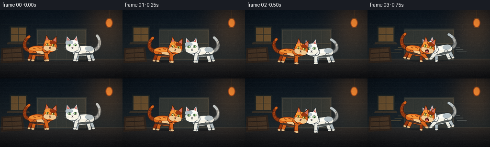
展开代码变化
--- 上一保存版本
+++ 本次保存版本
@@ -161,7 +161,7 @@
floor_bottom = np.array([16, 18, 22], dtype=np.float32)
floor_arr = floor_top * (1.0 - floor) + floor_bottom * floor
arr[103:, :, :] = np.repeat(floor_arr, W, axis=1)
- return Image.fromarray(np.clip(arr, 0, 255).astype(np.uint8), "RGB").resize(
+ return Image.fromarray(np.clip(arr, 0, 255).astype(np.uint8)).resize(
(W * SS, H * SS), Image.Resampling.BILINEAR
)
@@ -255,20 +255,6 @@
a = int(rng.uniform(12, 40))
draw.ellipse([sc(x), sc(y), sc(x + 0.7), sc(y + 0.7)], fill=(246, 188, 95, a))
- # Camera jolt during the impact.
- if 5 <= frame <= 10:
- jitter = [0, 1, -1, 2, -2, 1][frame - 5]
- base = Image.new("RGB", base.size, (7, 11, 15))
- base.paste(
- gradient_background().crop(
- (sc(jitter), sc(abs(jitter) // 2), base.width + sc(jitter), base.height + sc(abs(jitter) // 2))
- ),
- (0, 0),
- )
- # Reapply the same drawing over the shifted plate.
- draw = ImageDraw.Draw(base, "RGBA")
- for y in (103, 114, 127, 140):
- draw.line([spt((0, y)), spt((W, y))], fill=(73, 76, 75, 50), width=sc(0.8))
return base
@@ -286,10 +272,10 @@
}
WHITE = {
- "fur": (232, 232, 218, 255),
- "light": (255, 252, 236, 255),
- "dark": (177, 186, 187, 255),
- "cream": (248, 240, 218, 255),
+ "fur": (241, 242, 232, 255),
+ "light": (255, 255, 247, 255),
+ "dark": (178, 192, 198, 255),
+ "cream": (250, 246, 231, 255),
"outline": (43, 54, 61, 255),
"eye": (171, 228, 147, 255),
"iris": (65, 131, 108, 255),
@@ -345,6 +331,17 @@
ellipse(draw, (ex, eye_y), (eye_rx, eye_ry), palette["eye"], outline, 0.55)
ellipse(draw, (ex + side * 0.25, eye_y), (0.8, 2.0 + 0.6 * wide), (23, 27, 25, 255))
ellipse(draw, (ex - 0.8, eye_y - 0.7), (0.55, 0.55), (255, 255, 232, 255))
+ if state.get("angry", 0.0) > 0.3:
+ draw.line(
+ [spt((cx - 9.5, cy - 6.2)), spt((cx - 3.1, cy - 4.7))],
+ fill=outline,
+ width=sc(0.85),
+ )
+ draw.line(
+ [spt((cx + 3.1, cy - 4.7)), spt((cx + 9.5, cy - 6.2))],
+ fill=outline,
+ width=sc(0.85),
+ )
polygon(draw, [(cx - 1.7, cy + 2.6), (cx + 1.7, cy + 2.6), (cx, cy + 4.4)], palette["nose"], outline, 0.45)
mouth = state.get("mouth", 0.0)
@@ -475,19 +472,20 @@
"mouth": 0.0,
"wide": 0.2,
"squint": 0.0,
+ "angry": 0.0,
}
ORANGE_KEYS = {
0: dict(x=82, y=86, angle=-4, crouch=0.18, head_tilt=-2, tail_lift=0.62, tail_wag=0.8, front_reach=0.10, mouth=0.05, wide=0.2),
2: dict(x=94, y=91, angle=-8, crouch=0.78, head_tilt=-5, tail_lift=0.30, tail_wag=-1.0, front_reach=0.0, mouth=0.15, wide=0.35, squint=0.15),
- 4: dict(x=111, y=80, angle=-20, crouch=0.15, head_tilt=4, tail_lift=0.92, tail_wag=-0.6, front_reach=0.92, mouth=0.92, wide=0.9),
- 5: dict(x=120, y=77, angle=-30, crouch=0.0, head_tilt=8, tail_lift=1.0, tail_wag=-0.3, front_reach=1.0, mouth=1.0, wide=1.0),
- 6: dict(x=126, y=79, angle=-38, crouch=0.0, head_tilt=10, tail_lift=1.0, tail_wag=0.0, front_reach=1.0, mouth=1.0, wide=1.0),
- 10: dict(x=106, y=69, angle=-33, crouch=0.0, head_tilt=-3, tail_lift=0.85, tail_wag=0.8, front_reach=0.42, mouth=0.72, wide=0.65, squint=0.1),
+ 4: dict(x=111, y=80, angle=-20, crouch=0.15, head_tilt=4, tail_lift=0.92, tail_wag=-0.6, front_reach=0.92, mouth=0.92, wide=0.9, angry=0.8),
+ 5: dict(x=120, y=77, angle=-30, crouch=0.0, head_tilt=8, tail_lift=1.0, tail_wag=-0.3, front_reach=1.0, mouth=1.0, wide=1.0, angry=1.0),
+ 6: dict(x=126, y=79, angle=-38, crouch=0.0, head_tilt=10, tail_lift=1.0, tail_wag=0.0, front_reach=1.0, mouth=1.0, wide=1.0, angry=1.0),
+ 10: dict(x=99, y=73, angle=-28, crouch=0.0, head_tilt=-3, tail_lift=0.85, tail_wag=0.8, front_reach=0.42, mouth=0.72, wide=0.65, squint=0.1),
12: dict(x=93, y=95, angle=10, crouch=0.9, head_tilt=-7, tail_lift=0.2, tail_wag=-0.6, front_reach=0.0, mouth=0.22, wide=0.25, squint=0.55),
14: dict(x=102, y=88, angle=-3, crouch=0.45, head_tilt=-2, tail_lift=0.42, tail_wag=0.7, front_reach=0.15, mouth=0.2, wide=0.3, squint=0.15),
- 16: dict(x=115, y=82, angle=-16, crouch=0.2, head_tilt=5, tail_lift=0.9, tail_wag=-0.2, front_reach=0.95, mouth=1.0, wide=0.8),
+ 16: dict(x=115, y=82, angle=-16, crouch=0.2, head_tilt=5, tail_lift=0.9, tail_wag=-0.2, front_reach=0.95, mouth=1.0, wide=0.8, angry=1.0),
18: dict(x=108, y=90, angle=-7, crouch=0.55, head_tilt=-3, tail_lift=0.5, tail_wag=0.8, front_reach=0.25, mouth=0.55, wide=0.5, squint=0.15),
19: dict(x=106, y=91, angle=-5, crouch=0.6, head_tilt=-4, tail_lift=0.46, tail_wag=0.9, front_reach=0.15, mouth=0.4, wide=0.45, squint=0.2),
}
@@ -495,13 +493,13 @@
WHITE_KEYS = {
0: dict(x=174, y=86, angle=4, crouch=0.18, head_tilt=2, tail_lift=0.72, tail_wag=-0.8, front_reach=0.12, mouth=0.05, wide=0.2),
2: dict(x=162, y=91, angle=8, crouch=0.75, head_tilt=5, tail_lift=0.36, tail_wag=1.0, front_reach=0.03, mouth=0.2, wide=0.35, squint=0.1),
- 4: dict(x=146, y=79, angle=19, crouch=0.12, head_tilt=-4, tail_lift=0.9, tail_wag=0.6, front_reach=0.86, mouth=0.9, wide=0.9),
- 5: dict(x=136, y=77, angle=28, crouch=0.0, head_tilt=-7, tail_lift=1.0, tail_wag=0.3, front_reach=1.0, mouth=1.0, wide=1.0),
- 6: dict(x=130, y=79, angle=36, crouch=0.0, head_tilt=-9, tail_lift=1.0, tail_wag=0.0, front_reach=1.0, mouth=1.0, wide=1.0),
- 10: dict(x=149, y=69, angle=32, crouch=0.0, head_tilt=4, tail_lift=0.84, tail_wag=-0.8, front_reach=0.42, mouth=0.72, wide=0.65, squint=0.1),
+ 4: dict(x=146, y=79, angle=19, crouch=0.12, head_tilt=-4, tail_lift=0.9, tail_wag=0.6, front_reach=0.86, mouth=0.9, wide=0.9, angry=0.8),
+ 5: dict(x=136, y=77, angle=28, crouch=0.0, head_tilt=-7, tail_lift=1.0, tail_wag=0.3, front_reach=1.0, mouth=1.0, wide=1.0, angry=1.0),
+ 6: dict(x=130, y=79, angle=36, crouch=0.0, head_tilt=-9, tail_lift=1.0, tail_wag=0.0, front_reach=1.0, mouth=1.0, wide=1.0, angry=1.0),
+ 10: dict(x=157, y=73, angle=28, crouch=0.0, head_tilt=4, tail_lift=0.84, tail_wag=-0.8, front_reach=0.42, mouth=0.72, wide=0.65, squint=0.1),
12: dict(x=165, y=95, angle=-9, crouch=0.9, head_tilt=7, tail_lift=0.22, tail_wag=0.7, front_reach=0.0, mouth=0.2, wide=0.25, squint=0.5),
14: dict(x=156, y=88, angle=4, crouch=0.45, head_tilt=2, tail_lift=0.44, tail_wag=-0.6, front_reach=0.12, mouth=0.18, wide=0.3, squint=0.1),
- 16: dict(x=142, y=82, angle=15, crouch=0.2, head_tilt=-5, tail_lift=0.9, tail_wag=0.3, front_reach=0.94, mouth=1.0, wide=0.85),
+ 16: dict(x=142, y=82, angle=15, crouch=0.2, head_tilt=-5, tail_lift=0.9, tail_wag=0.3, front_reach=0.94, mouth=1.0, wide=0.85, angry=1.0),
18: dict(x=149, y=90, angle=7, crouch=0.55, head_tilt=3, tail_lift=0.5, tail_wag=-0.8, front_reach=0.3, mouth=0.6, wide=0.5, squint=0.15),
19: dict(x=151, y=91, angle=5, crouch=0.6, head_tilt=4, tail_lift=0.45, tail_wag=-0.9, front_reach=0.2, mouth=0.45, wide=0.45, squint=0.2),
}
@@ -625,64 +623,104 @@
def draw_tangle(base: Image.Image, frame: int) -> None:
- spin = {7: -12.0, 8: 31.0, 9: 76.0}[frame]
- cx, cy = 129.0, 77.0
+ # The collision is a compact, two-colored knot rather than a radial burst.
+ # Alternating bodies, heads, paws, and tails keep both animals readable.
+ spin = {7: -10.0, 8: 18.0, 9: 48.0}[frame]
+ squeeze = {7: 1.0, 8: 0.82, 9: 0.68}[frame]
+ cx, cy = 128.0, 79.0
layer = Image.new("RGBA", base.size, (0, 0, 0, 0))
draw = ImageDraw.Draw(layer, "RGBA")
- # Tails and loose limbs spin around the interlocked bodies.
- for phase, palette in ((0.0, ORANGE), (math.pi, WHITE)):
- a = math.radians(spin + math.degrees(phase))
- points = [
- (cx + math.cos(a) * 20, cy + math.sin(a) * 10),
- (cx + math.cos(a + 0.7) * 34, cy + math.sin(a + 0.7) * 23),
- (cx + math.cos(a + 1.6) * 41, cy + math.sin(a + 1.6) * 26),
- (cx + math.cos(a + 2.35) * 31, cy + math.sin(a + 2.35) * 18),
- ]
- tapered_path(draw, points, 4.0, 2.1, palette["fur"], palette["outline"], 0.8)
- for offset in (0.6, 1.4):
- bx = cx + math.cos(a + offset) * 39
- by = cy + math.sin(a + offset) * 24
- capsule(draw, (bx, by), (bx + math.cos(a + offset + 0.9) * 12, by + math.sin(a + offset + 0.9) * 10), 3.0, 1.8, palette["fur"], palette["outline"], 0.6)
-
- # Crossed bodies.
- ellipse(draw, (cx - 5, cy + 2), (29, 16), ORANGE["fur"], ORANGE["outline"], 1.0, spin - 24)
- ellipse(draw, (cx + 7, cy - 1), (26, 14), WHITE["fur"], WHITE["outline"], 1.0, spin + 38)
- ellipse(draw, (cx + 3, cy + 3), (15, 7), WHITE["dark"], angle=spin + 38)
- for ox, oy in ((-14, -3), (-2, -8), (10, -7)):
+ # Orange tail curls under the knot; white tail snaps over the top.
+ orange_tail = bezier(
+ (cx - 20, cy + 4),
+ (cx - 37, cy + 13),
+ (cx - 37, cy + 1),
+ (cx - 30 + 3 * squeeze, cy - 9),
+ )
+ white_tail = bezier(
+ (cx + 23, cy + 2),
+ (cx + 39, cy - 4),
+ (cx + 33, cy - 19),
+ (cx + 23, cy - 20),
+ )
+ tapered_path(draw, orange_tail, 4.0, 2.2, ORANGE["fur"], ORANGE["outline"], 0.8)
+ tapered_path(draw, white_tail, 4.1, 2.3, WHITE["fur"], WHITE["outline"], 0.8)
+ for point in orange_tail[6:-4:5]:
+ ellipse(draw, point, (2.7, 2.4), ORANGE["dark"])
+ for point in white_tail[7:-4:5]:
+ ellipse(draw, point, (2.7, 2.4), WHITE["dark"])
+
+ # Two bodies collide shoulder-to-shoulder.
+ ellipse(
+ draw,
+ (cx - 12 * squeeze, cy + 3),
+ (25, 14.5),
+ ORANGE["fur"],
+ ORANGE["outline"],
+ 1.0,
+ -16 + spin * 0.5,
+ )
+ ellipse(
+ draw,
+ (cx + 12 * squeeze, cy + 2),
+ (24, 14.0),
+ WHITE["fur"],
+ WHITE["outline"],
+ 1.0,
+ 15 - spin * 0.5,
+ )
+ ellipse(draw, (cx - 8 * squeeze, cy + 4), (14, 7), ORANGE["cream"], angle=-12)
+ ellipse(draw, (cx + 8 * squeeze, cy + 3), (13, 7), WHITE["cream"], angle=12)
+ for ox, oy in ((-21, -5), (-12, -10), (-3, -9)):
draw.line(
- [spt((cx + ox, cy + oy)), spt((cx + ox + 6, cy + oy + 2))],
+ [spt((cx + ox, cy + oy)), spt((cx + ox + 6, cy + oy + 1.5))],
fill=ORANGE["dark"],
- width=sc(1.4),
+ width=sc(1.5),
)
-
- # Two compressed heads at opposite edges make the tangle legible as cats.
- head_state_o = dict(head_tilt=spin - 35, mouth=0.75, wide=0.0, squint=1.0)
- head_state_w = dict(head_tilt=spin + 38, mouth=0.85, wide=0.0, squint=1.0)
- head_o = draw_head(ORANGE, head_state_o).rotate(spin - 28, resample=Image.Resampling.BICUBIC)
- head_w = draw_head(WHITE, head_state_w).rotate(spin + 30, resample=Image.Resampling.BICUBIC)
- layer.alpha_composite(head_o, (sc(cx - 39), sc(cy - 21)))
- layer.alpha_composite(head_w, (sc(cx + 9), sc(cy - 14)))
-
- # Scattered paws and claws.
- for a, palette in ((spin + 65, WHITE), (spin + 205, ORANGE)):
- rad = math.radians(a)
- start = (cx + math.cos(rad) * 25, cy + math.sin(rad) * 14)
- end = (cx + math.cos(rad) * 39, cy + math.sin(rad) * 26)
- capsule(draw, start, end, 3.2, 2.2, palette["fur"], palette["outline"], 0.65)
+ ellipse(draw, (cx + 13, cy - 6), (9, 5), WHITE["dark"], angle=18)
+
+ # Heads tilt into the collision, their faces still facing one another.
+ head_o = draw_head(ORANGE, dict(head_tilt=-12 + spin * 0.35, mouth=1.0, wide=0.1, squint=1.0, angry=1.0))
+ head_w = draw_head(WHITE, dict(head_tilt=12 - spin * 0.35, mouth=1.0, wide=0.1, squint=1.0, angry=1.0)).transpose(
+ Image.Transpose.FLIP_LEFT_RIGHT
+ )
+ head_o = head_o.rotate(-13 + spin * 0.55, resample=Image.Resampling.BICUBIC)
+ head_w = head_w.rotate(-13 + spin * 0.55, resample=Image.Resampling.BICUBIC)
+ layer.alpha_composite(head_o, (sc(cx - 31), sc(cy - 29)))
+ layer.alpha_composite(head_w, (sc(cx + 11), sc(cy - 30)))
+
+ # Grappling paws: each cat has one arm around the other's body.
+ capsule(draw, (cx - 15, cy + 4), (cx + 9, cy - 2), 3.3, 2.3, ORANGE["fur"], ORANGE["outline"], 0.7)
+ ellipse(draw, (cx + 10, cy - 2), (3.3, 2.2), ORANGE["cream"], ORANGE["outline"], 0.5)
+ capsule(draw, (cx + 17, cy + 5), (cx - 7, cy + 9), 3.2, 2.3, WHITE["fur"], WHITE["outline"], 0.7)
+ ellipse(draw, (cx - 8, cy + 9), (3.3, 2.2), WHITE["cream"], WHITE["outline"], 0.5)
+
+ # Flailing hind legs define the bottom edge of the knot.
+ capsule(draw, (cx - 8, cy + 10), (cx - 22, cy + 22), 3.3, 2.1, ORANGE["fur"], ORANGE["outline"], 0.65)
+ capsule(draw, (cx + 10, cy + 10), (cx + 24, cy + 20), 3.3, 2.1, WHITE["fur"], WHITE["outline"], 0.65)
+ for x, y, palette in ((cx - 23, cy + 23, ORANGE), (cx + 25, cy + 21, WHITE)):
for side in (-1, 0, 1):
- tangent = (math.cos(rad + side * 0.16) * 5, math.sin(rad + side * 0.16) * 5)
draw.line(
- [spt(end), spt((end[0] + tangent[0], end[1] + tangent[1]))],
- fill=(250, 240, 210, 230),
+ [spt((x, y)), spt((x + side * 2.0 + 3, y + 4))],
+ fill=(249, 240, 211, 235),
width=sc(0.55),
)
-
- # Soft fur-ball edge.
- for i in range(14):
- a = math.tau * i / 14 + math.radians(spin)
- x, y = cx + math.cos(a) * 29, cy + math.sin(a) * 15
- ellipse(draw, (x, y), (3.2, 2.2), ORANGE["light"] if i % 2 else WHITE["dark"])
+ ellipse(draw, (x, y), (3.2, 2.1), palette["cream"], palette["outline"], 0.5)
+
+ # A few tufts at the contact point sell the force of impact.
+ for i, (x, y, palette) in enumerate(
+ (
+ (cx - 4, cy - 17, ORANGE),
+ (cx + 4, cy - 19, WHITE),
+ (cx - 24, cy - 12, ORANGE),
+ (cx + 26, cy - 14, WHITE),
+ )
+ ):
+ a = math.radians(-90 + (i - 1.5) * 38)
+ end = (x + math.cos(a) * 6, y + math.sin(a) * 6)
+ capsule(draw, (x, y), end, 2.4, 1.3, palette["light"], palette["outline"], 0.45)
+
base.paste(layer, (0, 0), layer)
可观测工具轨迹
实际执行的命令与返回图片。
命令 1exit 0
/bin/bash -c "pwd && rg --files -g '"'!*'"\\.git*' | sed -n '1,120p'"
命令 2exit 0
/bin/bash -c 'cat prompt.txt'
命令 3exit 0
/bin/bash -c 'cat GENERATION_RULES.md'
命令 4exit 0
/bin/bash -c 'cat task_spec.json'
命令 5exit 0
/bin/bash -c "sed -n '1,240p' artifact_io.py"
命令 6exit 0
/bin/bash -c "sed -n '1,260p' player_template.html"
命令 7exit 0
/bin/bash -c "find . -maxdepth 2 -type f -printf '%p %s bytes\\n' | sort"
命令 8exit 0
/bin/bash -c 'python generate.py'
命令 9exit 0
/bin/bash -c "python - <<'PY'
from PIL import Image
ims=[Image.open(f'frames/{i:02d}.png') for i in range(20)]
for idx in (4,5,7,8,9,16):
ims[idx].resize((768,432), Image.Resampling.NEAREST).save(f'.tmp/key_{idx:02d}.png')
print('shape', ims[0].size, len(ims))
PY"命令 10exit 0
/bin/bash -c "rg -n '"'^def (draw_tangle|light_and_grade|draw_dust|paste_cat|cat_sprite)'"' generate.py && sed -n '600,760p' generate.py"
命令 11exit 0
/bin/bash -c 'python generate.py'
命令 12exit 0
/bin/bash -c "python - <<'PY'
from PIL import Image
for idx in (0,2,4,5,7,8,9,10,12,14,16,19):
Image.open(f'frames/{idx:02d}.png').resize((768,432), Image.Resampling.NEAREST).save(f'.tmp/check_{idx:02d}.png')
PY"命令 13exit 0
/bin/bash -c "python - <<'PY'
from pathlib import Path
import json
import numpy as np
from PIL import Image
spec=json.loads(Path('task_spec.json').read_text())
data=np.load('pixels.npz')['pixels']
frames=[Image.open(f'frames/{i:02d}.png') for i in range(spec['frames'])]
print('npz', data.shape, data.dtype)
print('pngs', len(frames), frames[0].size, frames[0].mode)
print('index', Path('index.html').stat().st_size, 'bytes', 'pixelReady', '__pixelReady=true' in Path('index.html').read_text())
print('spec', spec)
print('frame uniqueness', len({f.tobytes() for f in frames}))
PY"视觉工具实际返回图片 1

视觉工具实际返回图片 2
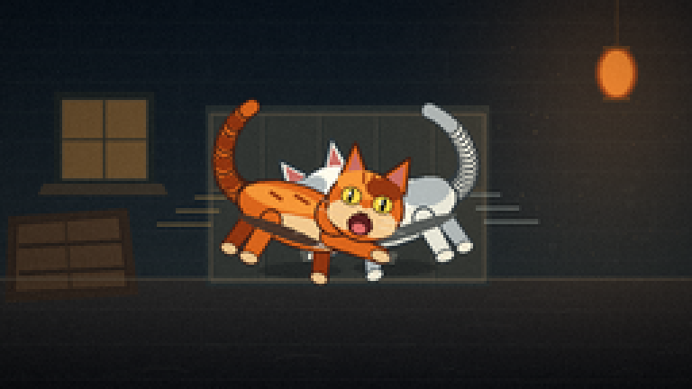
视觉工具实际返回图片 3
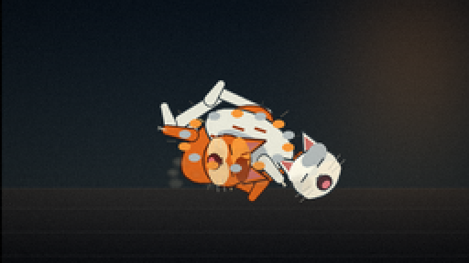
视觉工具实际返回图片 4
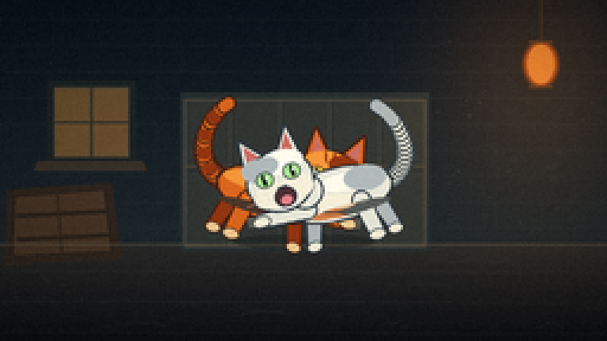
视觉工具实际返回图片 5
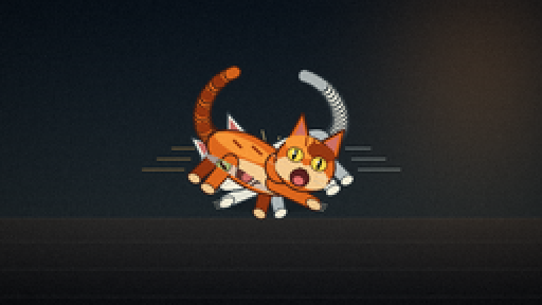
视觉工具实际返回图片 6
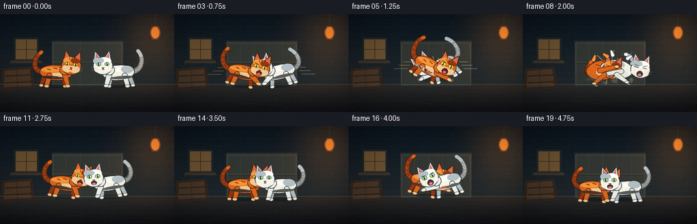
视觉工具实际返回图片 7
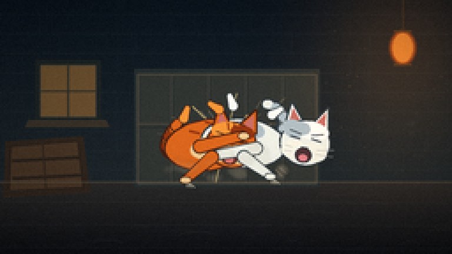
视觉工具实际返回图片 8
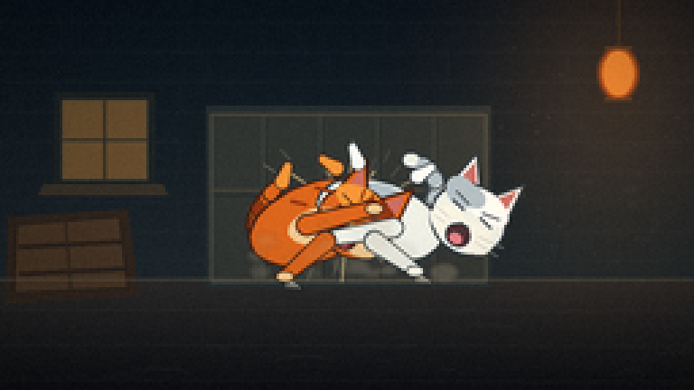
视觉工具实际返回图片 9
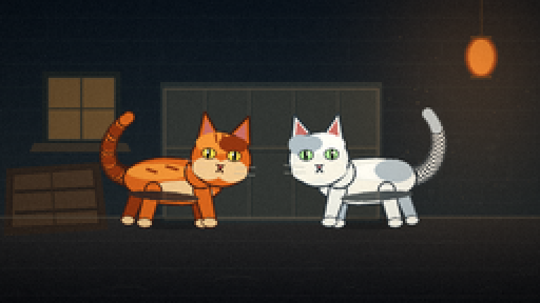
视觉工具实际返回图片 10
视觉工具实际返回图片 11
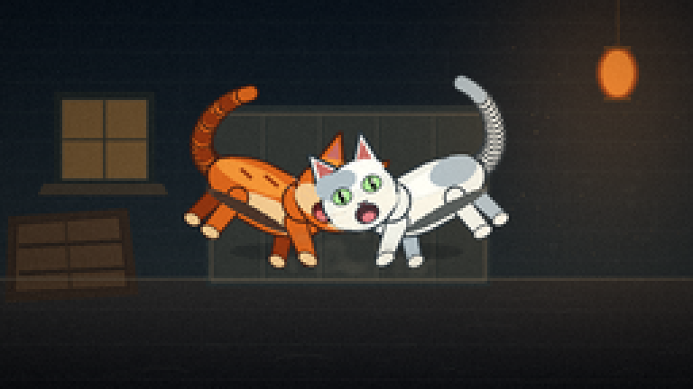
视觉工具实际返回图片 12
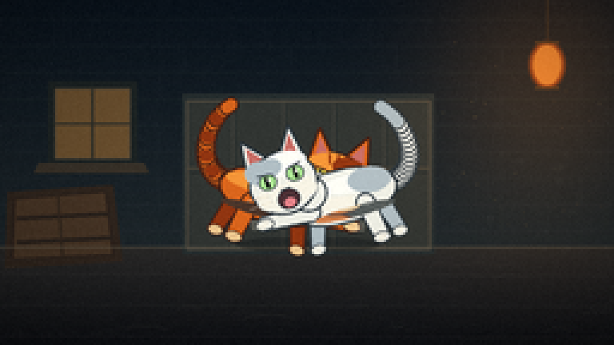
视觉工具实际返回图片 13
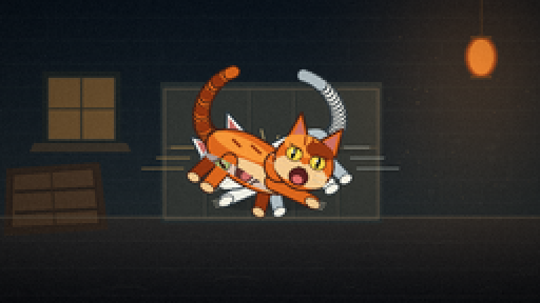
视觉工具实际返回图片 14
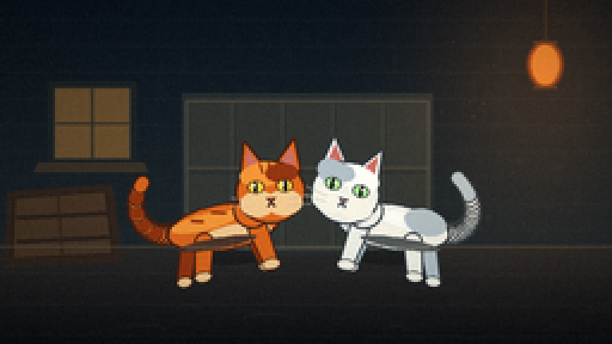
视觉工具实际返回图片 15
保存候选 2 份；完成命令 13 次；可验证图片返回 15 张。原始 API 响应与完整日志保留在本地。